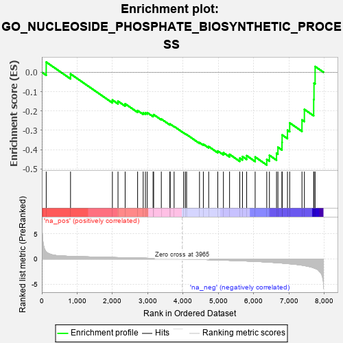
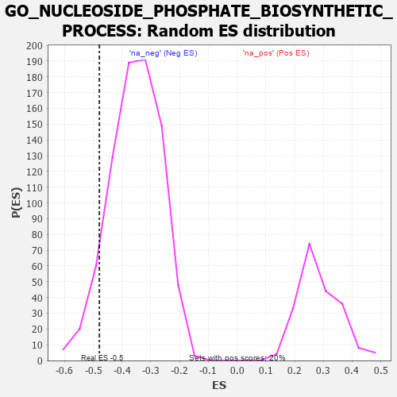

| | | Dataset | 7d |
| Phenotype | NoPhenotypeAvailable |
| Upregulated in class | na_neg |
| GeneSet | GO_NUCLEOSIDE_PHOSPHATE_BIOSYNTHETIC_PROCESS |
| Enrichment Score (ES) | -0.4791509 |
| Normalized Enrichment Score (NES) | -1.3536837 |
| Nominal p-value | 0.08165829 |
| FDR q-value | 0.4007874 |
| FWER p-Value | 1.0 |
Table: GSEA Results Summary

Fig 1: Enrichment plot: GO_NUCLEOSIDE_PHOSPHATE_BIOSYNTHETIC_PROCESS
Profile of the Running ES Score & Positions of GeneSet Members on the Rank Ordered List
| PROBE | GENE SYMBOL | GENE_TITLE | RANK IN GENE LIST | RANK METRIC SCORE | RUNNING ES | CORE ENRICHMENT | | 1 | ADCY8 | | | 124 | 1.418 | 0.0525 | No |
| 2 | UCK2 | | | 812 | 0.529 | -0.0087 | No |
| 3 | PRPS1 | | | 1997 | 0.305 | -0.1434 | No |
| 4 | TECR | | | 2156 | 0.284 | -0.1496 | No |
| 5 | RNLS | | | 2358 | 0.252 | -0.1629 | No |
| 6 | UCKL1 | | | 2711 | 0.197 | -0.1978 | No |
| 7 | DCTD | | | 2869 | 0.171 | -0.2094 | No |
| 8 | TAZ | | | 2933 | 0.161 | -0.2096 | No |
| 9 | DUT | | | 2985 | 0.152 | -0.2087 | No |
| 10 | ACLY | | | 3149 | 0.130 | -0.2230 | No |
| 11 | PPCS | | | 3165 | 0.127 | -0.2188 | No |
| 12 | PPAT | | | 3382 | 0.091 | -0.2417 | No |
| 13 | UPP2 | | | 3624 | 0.056 | -0.2694 | No |
| 14 | ACSL4 | | | 3632 | 0.055 | -0.2676 | No |
| 15 | HACD2 | | | 3744 | 0.035 | -0.2799 | No |
| 16 | PARP1 | | | 4014 | -0.010 | -0.3134 | No |
| 17 | AMPD2 | | | 4062 | -0.017 | -0.3185 | No |
| 18 | PDP2 | | | 4098 | -0.023 | -0.3218 | No |
| 19 | GCDH | | | 4463 | -0.087 | -0.3635 | No |
| 20 | PNKP | | | 4572 | -0.111 | -0.3718 | No |
| 21 | COASY | | | 4723 | -0.144 | -0.3838 | No |
| 22 | COX5B | | | 4980 | -0.194 | -0.4068 | No |
| 23 | FLCN | | | 5140 | -0.235 | -0.4156 | No |
| 24 | RAD50 | | | 5314 | -0.276 | -0.4241 | No |
| 25 | MPC1 | | | 5603 | -0.345 | -0.4438 | No |
| 26 | PRPS2 | | | 5679 | -0.370 | -0.4355 | No |
| 27 | ADA | | | 5798 | -0.405 | -0.4309 | No |
| 28 | PPT1 | | | 6038 | -0.485 | -0.4378 | No |
| 29 | ACMSD | | | 6367 | -0.603 | -0.4502 | Yes |
| 30 | UMPS | | | 6442 | -0.637 | -0.4289 | Yes |
| 31 | ACSL5 | | | 6643 | -0.737 | -0.4187 | Yes |
| 32 | MPC2 | | | 6683 | -0.753 | -0.3875 | Yes |
| 33 | TBPL1 | | | 6798 | -0.814 | -0.3628 | Yes |
| 34 | KYNU | | | 6802 | -0.816 | -0.3240 | Yes |
| 35 | PANK4 | | | 6953 | -0.907 | -0.2993 | Yes |
| 36 | PANK1 | | | 7016 | -0.948 | -0.2616 | Yes |
| 37 | LHPP | | | 7364 | -1.230 | -0.2463 | Yes |
| 38 | KMO | | | 7432 | -1.308 | -0.1919 | Yes |
| 39 | ADCY1 | | | 7695 | -1.752 | -0.1408 | Yes |
| 40 | ADCY9 | | | 7704 | -1.783 | -0.0561 | Yes |
| 41 | PANK2 | | | 7736 | -1.866 | 0.0296 | Yes |
Table: GSEA details [plain text format]

Fig 2: GO_NUCLEOSIDE_PHOSPHATE_BIOSYNTHETIC_PROCESS: Random ES distribution
Gene set null distribution of ES for GO_NUCLEOSIDE_PHOSPHATE_BIOSYNTHETIC_PROCESS